Equipment
Want to know where to buy equipment? We recommend these stores!


Can't decide where to buy? Click the button below for more information.
| Product | Brand | Description | Price |
|---|---|---|---|
| Fluke 117 Electrician’s Multimeter with Non-contact Voltage 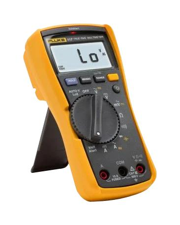 |
Fluke | The Fluke 117 Electrician’s Multimeter offers non-contact voltage detection and True RMS measurements for accurate and safe electrical testing. Compact and durable, it features a backlit display and auto-ranging capabilities, ideal for professional electricians. | 17277 |
| Fluke 87V TRMS Industrial Multimeter 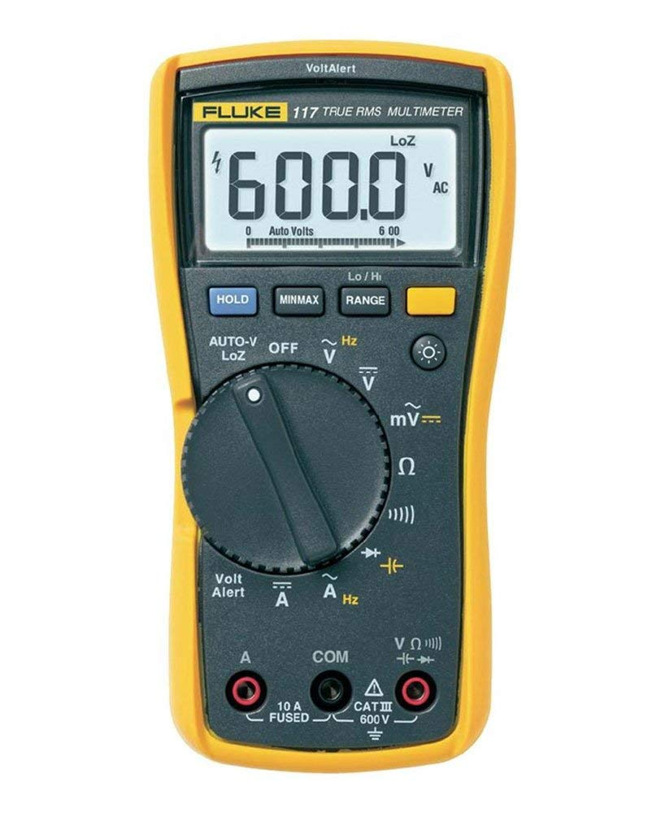 |
Fluke | The Fluke 87V TRMS Industrial Multimeter offers True RMS accuracy, advanced troubleshooting features, and durability, making it ideal for industrial environments. | 20321 |
| Fluke 179 TRMS Digital Multimeter with temperature readings 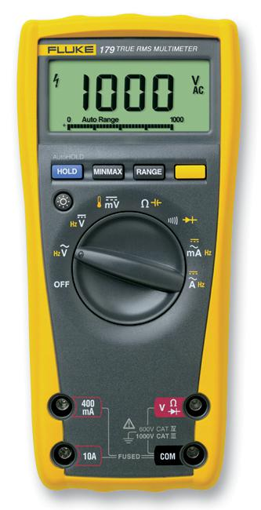 |
Fluke | The Fluke 179 TRMS Digital Multimeter provides accurate True RMS measurements and includes a built-in temperature reading function, making it versatile and reliable for electrical troubleshooting. | 29211 |
| Keithley DMM6500 6.5 Digit Multimeter with Graphical Touchscreen 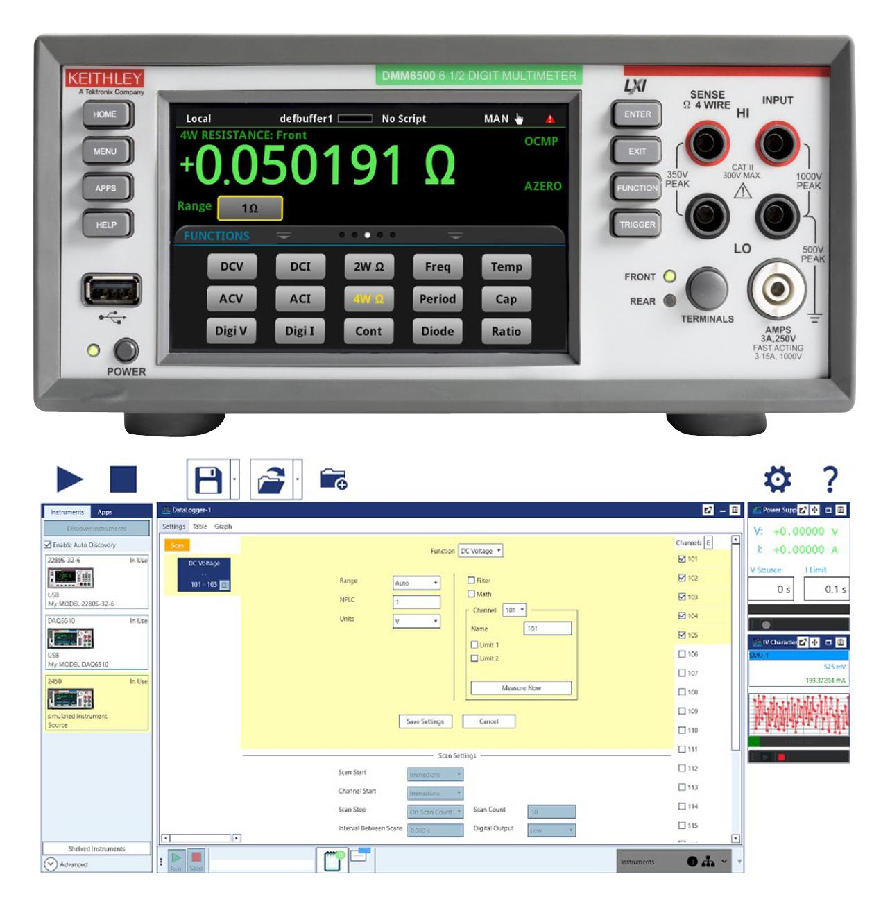 |
Tektronix | The Keithley DMM6500 is a 6.5-digit multimeter with a graphical touchscreen for intuitive operation. It offers high precision and a wide range of measurement functions, ideal for complex testing and data visualization. | 90870 |
| DMM7510 7.5 Digit Graphical Sampling Multimeter 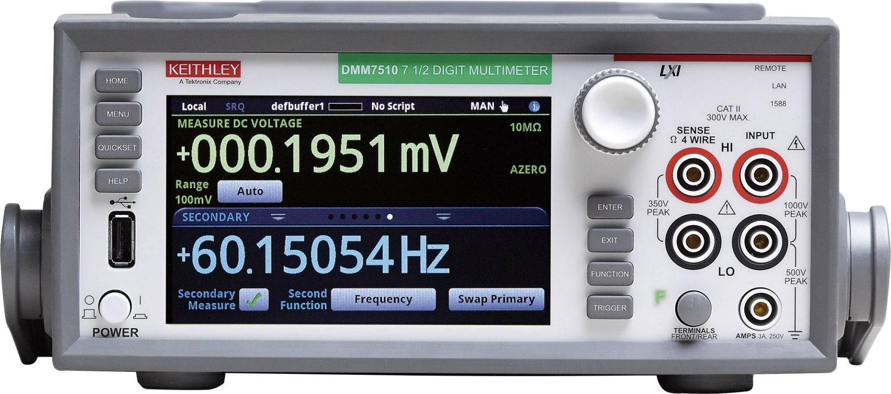 |
Tektronix | The DMM7510 is a 7.5-digit graphical sampling multimeter that combines high-resolution measurements with a touchscreen interface. It’s designed for precision testing, offering advanced data visualization and fast sampling rates for detailed analysis. | 294840 |
| Keithley DMM7512 Dual Channel 7.5 Digit Sampling Multimeter 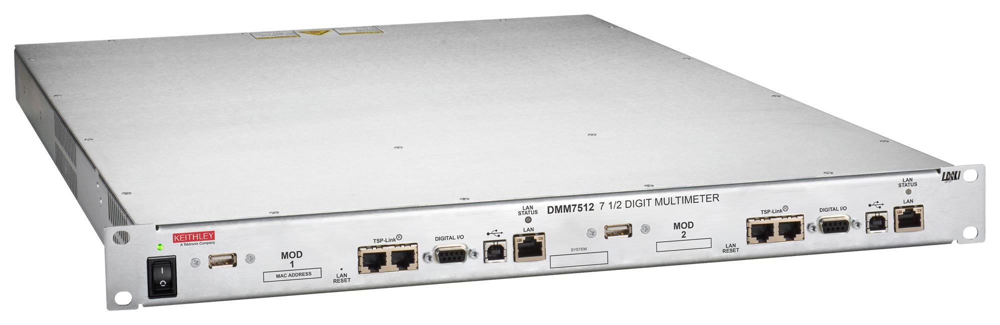 |
Tektronix | The Keithley DMM7512 is a dual-channel, 7.5-digit sampling multimeter designed for high-precision measurements. It features advanced data acquisition and simultaneous dual-channel measurements, making it ideal for complex and demanding testing environments. | 495300 |
| NI/EMERSON 783130-01 PXIe-4081 Digital Multimeter 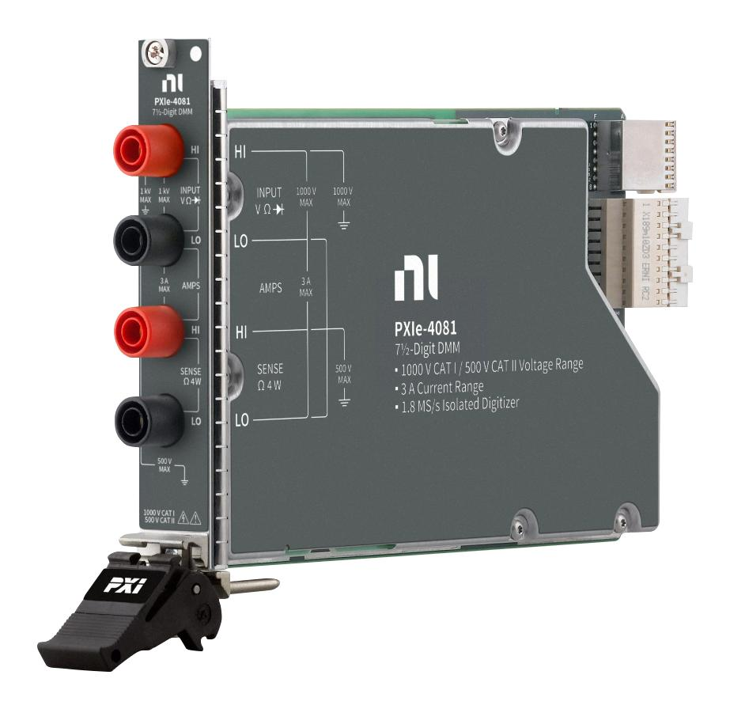 |
Keysight Technologies | The NI/EMERSON 783130-01 PXIe-4081 Digital Multimeter offers 7.5 digits of resolution, measuring up to 700 VAC/1 kV DC and 3 A AC/DC with a 5 GΩ input impedance and 1.8 MSPS sampling rate for fast, precise measurements. | 420422 |
| KEYSIGHT TECHNOLOGIES 34461A Bench Digital Multimeter 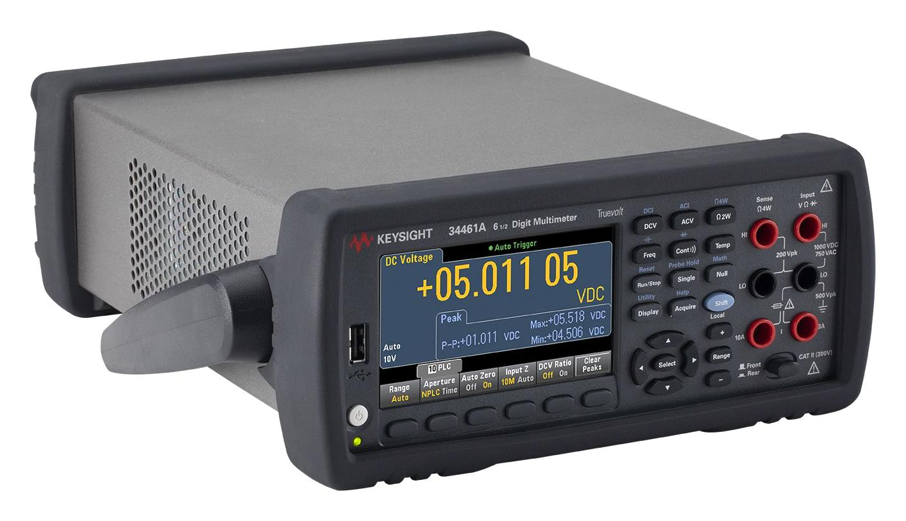 |
Keysight Technologies | The Keysight 34461A Digital Multimeter is a 6-digit Truevolt DMM that delivers precise, reliable measurements. It features advanced data analysis, a clear display, and is ideal for accurate, everyday testing needs. | 79794 |
| KEYSIGHT TECHNOLOGIES U1282A 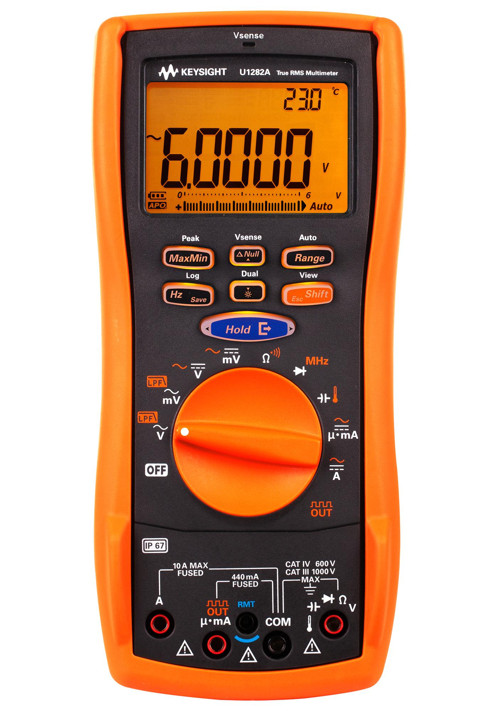 |
Keysight Technologies | The Keysight U1282A is a handheld digital multimeter known for its durability and versatility. It features a large display, advanced measurement functions, and a wide range of capabilities, making it ideal for fieldwork and troubleshooting in various applications. | 44235 |
Oscilloscope
| Product | Brand | Description | Price |
|---|---|---|---|
| Fluke 190-202 ScopeMeter Test Tool 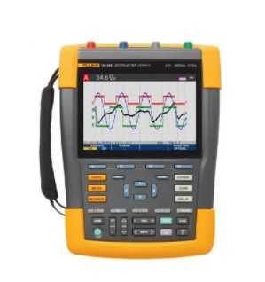 |
Fluke | The Fluke 190-202 ScopeMeter is a portable, rugged oscilloscope with 200 MHz bandwidth and 2 channels, ideal for troubleshooting electrical signals in the field. | 166035 |
| Fluke 125B ScopeMeter 120B Series Digital Handheld Oscilloscope, 2 Analogue Channels, 40MHz 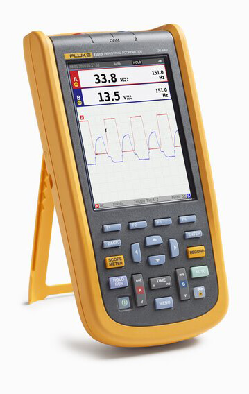 |
Fluke | The Fluke 125B ScopeMeter is a handheld digital oscilloscope with 2 analogue channels and 40 MHz bandwidth. It combines oscilloscope and multimeter functions, making it ideal for troubleshooting electrical and electronic systems. | 222979 |
| Fluke MDA-550-III ScopeMeter III Series Digital Portable Oscilloscope, 4 Analogue Channels, 550MHz 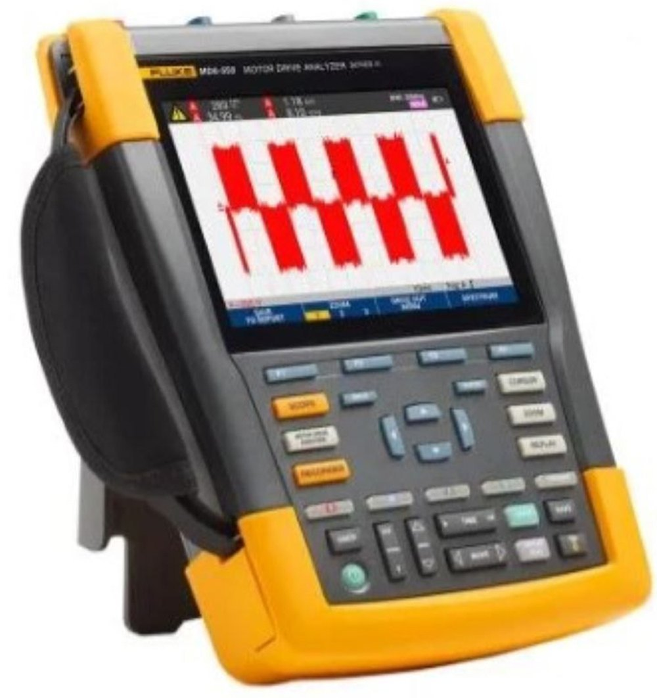 |
Fluke | The Fluke MDA-550-III ScopeMeter is a portable digital oscilloscope featuring 4 analogue channels and 550 MHz bandwidth. It's designed for advanced troubleshooting and analysis in demanding environments, combining powerful measurement capabilities with portability. | 616775 |
| TEKTRONIX MSO24 2-BW-200 MSO / MDO Oscilloscope 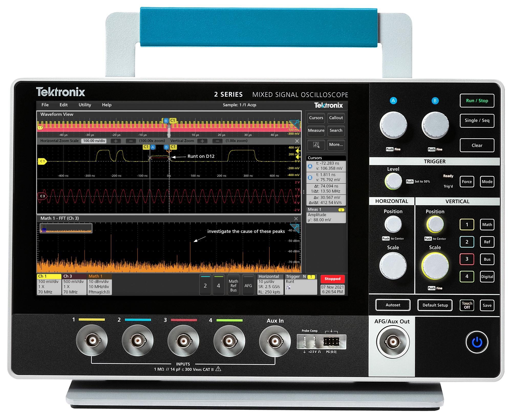 |
Tektronix | The TEKTRONIX MSO24 2-BW-200 is a mixed signal oscilloscope (MSO) that offers 200 MHz bandwidth and multiple channels for comprehensive signal analysis. It features advanced triggering and analysis capabilities, making it suitable for a wide range of applications. | 253500 |
TEKTRONIX TBS2202 Digital Oscilloscope |
Tektronix | The TEKTRONIX TBS2202B is a digital oscilloscope that offers 200 MHz bandwidth and 2 channels. It features an intuitive interface and various analysis tools, making it ideal for educational, troubleshooting, and engineering applications. | 171990 |
| TEKTRONIX TBS1072C Digital Oscilloscope 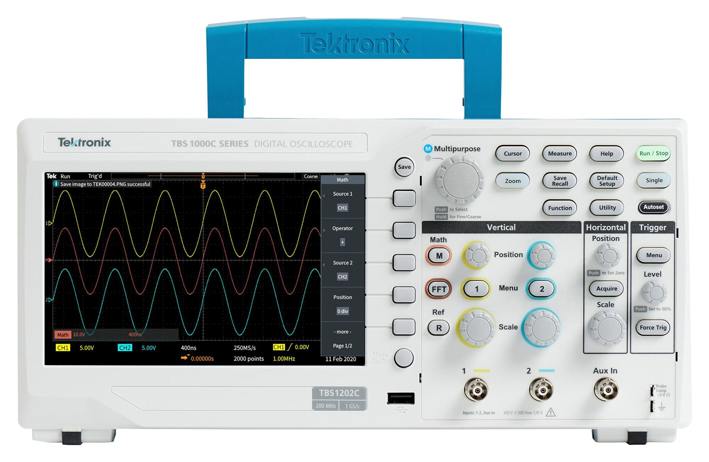 |
Tektronix | The TEKTRONIX TBS1072C is a digital oscilloscope with 70 MHz bandwidth and 2 channels. It offers a user-friendly interface, a large display, and essential measurement features, making it ideal for education and basic troubleshooting. | 495300 |
| Keysight Technologies DSOX3012G InfiniiVision 3000G X Series Digital Bench Oscilloscope, 2 Analogue Channels, 100MHz 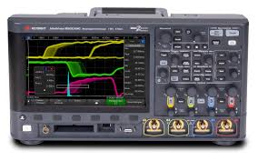 |
Keysight Technologies | The Keysight DSOX3012G InfiniiVision 3000G X Series is a digital bench oscilloscope with 2 analogue channels and 100 MHz bandwidth, featuring advanced capabilities for versatile testing and troubleshooting. | 312762 |
| Keysight Technologies DSOX2012A InfiniiVision 2000 X Series Digital Bench Oscilloscope, 2 Analogue Channels, 100MHz 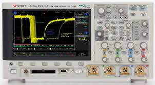 |
Keysight Technologies | The Keysight DSOX2012A InfiniiVision 2000 X Series is a digital bench oscilloscope with 2 analogue channels and 100 MHz bandwidth, designed for versatile testing and troubleshooting. | 143099 |
| KEYSIGHT TECHNOLOGIES DSOX1204A Digital Oscilloscope 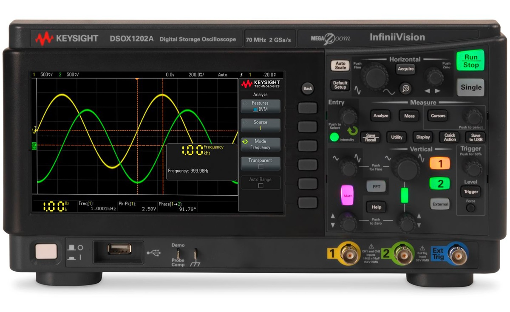 |
Keysight Technologies | The Keysight DSOX1204A is a digital oscilloscope featuring 200 MHz bandwidth and 4 channels. It offers advanced analysis capabilities, deep memory, and a user-friendly interface, making it ideal for various testing and debugging applications. | 44235 |
DC Power Supply
| Product | Brand | Description | Price |
|---|---|---|---|
| KEITHLEY 2280S-32-6 Bench Power Supply 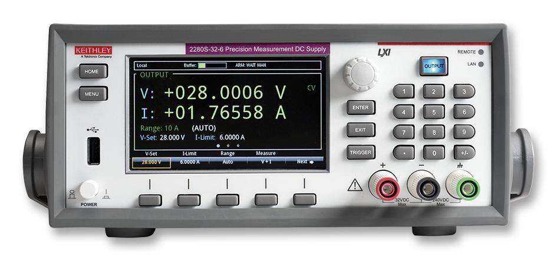 |
Tektronix | The Keithley 2280S-32-6 is a precision source measure unit (SMU) that provides programmable voltage and current outputs. It features a 32 V output range and 6 A maximum current, making it ideal for testing and characterizing a wide range of electronic devices and components. | 158564 |
| KEITHLEY 2230-30-1 Bench Power Supply 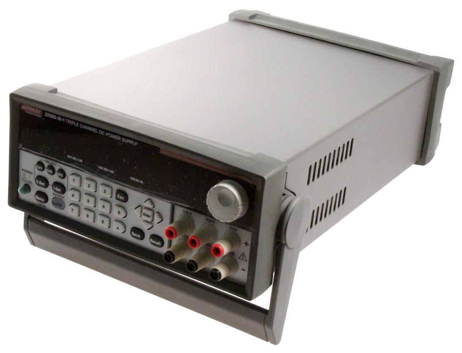 |
Tektronix | The Keithley 2230-30-1 is a bench power supply that provides three programmable outputs with a maximum voltage of 30 V and current of 1 A. It is designed for precise power delivery and flexibility in testing a variety of electronic devices and circuits. | 98280 |
Keithley 2281S Series Analogue, Digital Bench Power Supply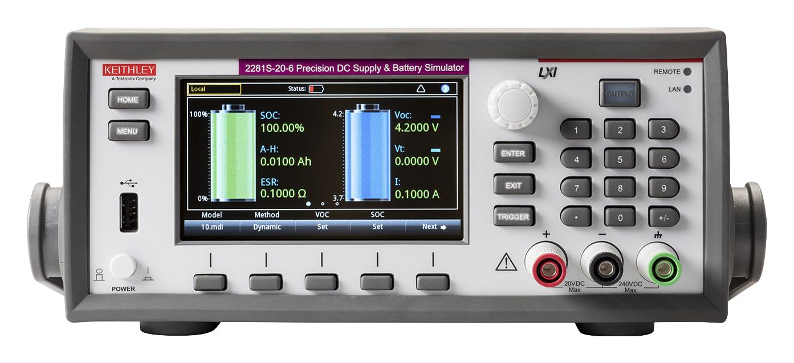 |
Tektronix | The Keithley 2281S Series is an analog and digital bench power supply that offers precise voltage and current sourcing capabilities. With advanced features for testing and characterization, it is ideal for powering electronic devices and integrating into automated test setups. | 323530 |
| Keysight Technologies E36300 Series Digital Bench Power Supply 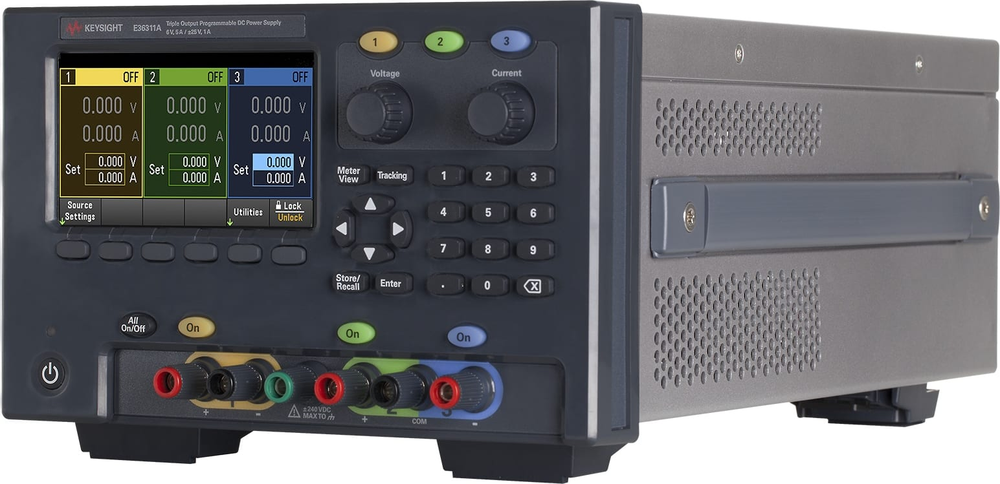 |
Keysight Technologies | The Keysight E36300 Series is a digital bench power supply that offers three outputs with programmable voltage and current settings. It provides high accuracy and reliability, making it suitable for a wide range of testing and research applications in electronic design and development. | 151885 |
| Keysight Technologies E36150 Series Digital Bench Power Supply, E36150ATMU 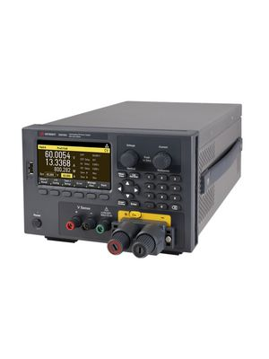 |
Keysight Technologies | The Keysight E36150 Series Digital Bench Power Supply, E36150ATMU, offers a single programmable output for precise voltage and current control, ideal for testing electronic devices. | 80466 |
| KEYSIGHT TECHNOLOGIES EDU36311A Bench Power Supply 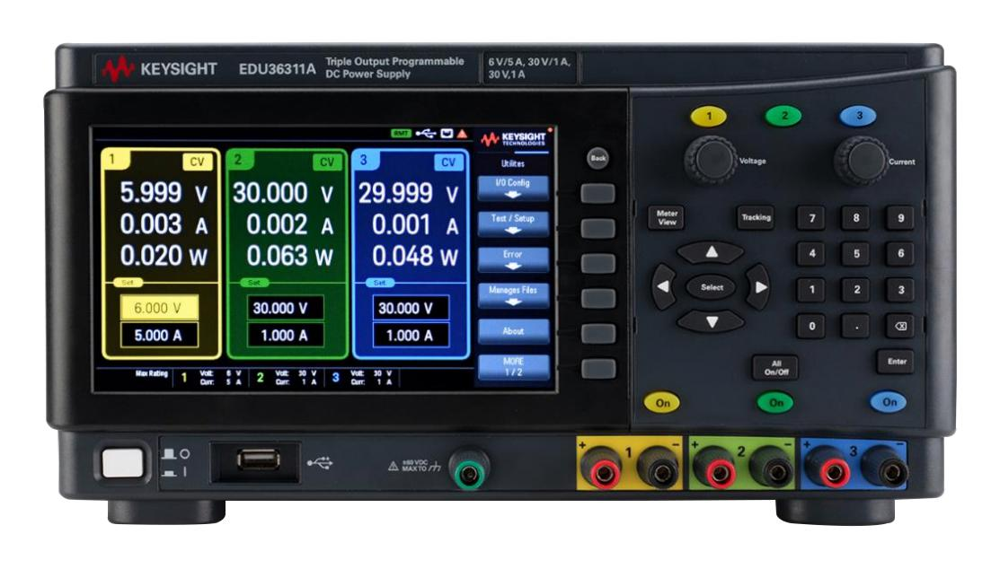 |
Keysight Technologies | The Keysight EDU36311A is a bench power supply that provides three outputs with programmable voltage and current settings. It's designed for educational use, offering high performance and user-friendly features for testing and powering electronic devices and circuits. | 55497 |